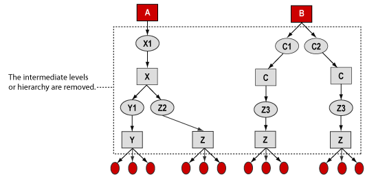
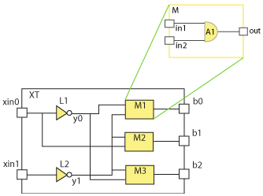

|
 |
 |
||||||
|
|
|
||||||
This document explains how OpenAccess manages hierarchy within a design. The following topics are covered:
Note: For information about how logical connectivity is handled in OpenAccess hierarchical designs, refer to Understanding Logical Connectivity.
An initial design representation is often implemented in a Hardware Description Language (HDL) such as Verilog or VHDL. This initial representation is used for RTL simulation along with a testbench to verify that the design meets the original functional requirements. As a design progresses from this initial stage, it is partitioned and synthesized into a structural representation that can be written as a Verilog netlist or directly represented in OpenAccess.
The physical design process must implement the design such that it satisfies
These requirements often result in the physical hierarchy implementation differing from the initial structural hierarchy. Despite this hierarchy mismatch, the completed physical design must be validated against the initial structural netlist, and the physical implementation must be functionally tested using the original testbench. In addition, the design must be evaluated for its electrical performance and circuit timing. Verifying and validating large complex designs, when the physical implementation is far removed from the original design representation, can be a very complex operation. In order to address these problems, OpenAccess implements a model for storing hierarchical design data called the embedded module hierarchy (EMH).
Before learning the specifics of EMH, it is worthwhile to review a basic design flow that uses hierarchical design data. If you are already familiar with these concepts, proceed to Understanding OpenAccess Embedded Module Hierarchy.
The process of creating components for reuse is an important aspect of most design processes. A design can include instances of other designs, and this organization of one design within another is termed hierarchical.
After a design has gone through synthesis, the logical design typically contains many small components, referred to as modules here. The modules are often reused multiple times. Typically, the hierarchy for a synthesized design is quite deep, as represented in the following example.
The next phase of the design process is to partition for implementation. In this example, the instances A1 and B1 become blocks in the implementation. Any module that is used in multiple partitions is copied.
Next, each block is flattened and the intermediate levels of hierarchy are removed (or ignored).

Now the design can be implemented, and the quality of the design can be checked. If the design is not acceptable, for example, if it does not pass timing, it can be repartitioned so the optimization can be redone:
After the implementation is acceptable, the top-level place and route can be performed. This process reuses the hierarchy back up to the top-level block:
The performance for the design can be verified at this point.
Many operations that are important to the overall integrity of a design flow are difficult or impossible when there is poor correspondence between the initial structural netlist and the physical implementation of a design. Operations such as annotating delays on the original netlist and propagating ECOs forward from the original logic design to the physical implementation require specialized tools and processes.
Many EDA database solutions fail to accommodate differences between the physical implementation and the initial design representation. Applications based on these databases are forced to devote significant resources to create and manage this mapping independently. OpenAccess implements a model for storing hierarchical design data that resolves many of these problems.
OpenAccess provides a solution that maintains precise correspondence, throughout the design flow, between the initial structural netlist and the final physical implementation. OpenAccess combines the initial structural netlist with the physical design representation in a single database. There might be modules in the netlist, which are intermediate levels of hierarchy, that are not represented directly in the physical implementation. These are known as embedded modules.
The OpenAccess database has three hierarchy domains for representing a design. These domains do not contain three copies of the design data. Instead, they represent the design in three different ways.
| The block domain contains the physical connectivity and the design geometry. This is the traditional design hierarchy for custom design. The block domain can be a folded hierarchy, which means that multiple instances of the same block are represented with a single copy of the block data.
|
|
The module domain contains the logical connectivity and can have more levels of hierarchy than the block domain. The module domain can also be a folded hierarchy. The module domain contains hierarchy and connectivity only.
|
|
| The occurrence domain is an unfolded representation of both the logical and physical elements of a design. Each occurrence object has its own unique master. You can use the occurrence domain to traverse both the module and block domains. The occurrence domain contains hierarchy, connectivity, and parasitics. |
OpenAccess can simultaneously represent related but distinct hierarchical connectivity in each of the three domains.
The multi-domain EMH capability is activated when the top module is designated for the oaDesign using the setTopModule function. If the visibleToBlock parameter of this function is set to true, then the oaBlock for this design is created and a full set of block objects that reflect the full hierarchy under the top module are created. At this point, the design is considered to be a full EMH design.
In a full EMH design, when an application creates a module object, a corresponding block object is automatically created. Conversely, an application can create a block object, and in most cases, the corresponding module object is created. Corresponding objects that are created in this way are called reflected objects. In both of these cases, the module and block objects are represented by corresponding objects in the occurrence domain. When an application changes the hierarchical connectivity in the module or block domain, OpenAccess automatically updates the connectivity in the other domains to reflect the changes.
The block domain contains the physical implementation and physical connectivity of a design. Each block (oaBlock) resides in its own design (oaDesign). The physical netlist is defined in terms of oaInst and oaNet objects. The block domain also can include geometry, floorplanning, and oaNets can have parasitics.
A block can be implemented in isolation, then instantiated several times in a chip. The block domain consists of a folded hierarchy in which each block represents a level of physical hierarchy.

The module domain contains the logical connectivity. In the module domain, the master for each level of hierarchy is represented by an oaModule. The oaModule object represents all that is functionally common about instantiations of a module. Module instances are created in the module domain as oaModInst objects.
An oaModInst is contained in an oaDesign, and it can either point to a module in the same oaDesign or a different oaDesign.
Folding of the design can occur both internally to the module hierarchy for a given design, and externally with references to other designs.
OpenAccess maintains a correlation between the module and block domains. The block connectivity is an unfolded version of the module connectivity in the same design.
When there are multiple instances of a given module, the module objects get unfolded. Accordingly, there can be more oaInsts in the block domain than there are oaModDesignInsts in the module domain.
The occurrence domain is an unfolded representation of both the logical and physical elements of a design. It contains nets (occNets) that can optionally include parasitics.
The occurrence domain is further unfolded than the block domain because multiple oaModDesignInsts are unfolded into their corresponding occurrence objects. Because of this complete unfolding, every occInst has exactly one master oaOccurrence, except at the bottom of the occurrence hierarchy where there are unbound occInsts. Correspondingly, every oaOccurrence has exactly one parent occInst, except for the top occurrence of an occurrence hierarchy, which has no parent.
Note: oaDesign::getTopOccurrence() gets the top occurrence for an occurrence hierarchy that starts at a given oaDesign.
The occurrence domain includes at least one occurrence (oaOccurrence) for each oaModule and each oaBlock, and one occurrence instance (oaOccInst) for each oaModInst or oaInst. There are occurrence objects for every oaTerm and oaInstTerm in the module and block domains.
A single occurrence hierarchy can contain objects reflected from multiple oaDesigns, as shown in the previous example. All the objects under a top occurrence are stored in the same design as that top occurrence, even if they are reflections of objects that reside in different oaDesigns.
Where the block domain in a given oaDesign is an unfolded representation of its module data, the occurrence domain is further unfolded when there are multiple instances of an oaDesign. So, if a module has two instances in an oaDesign, and if there are two instances of that oaDesign in its parent oaDesign, there will be four oaOccurrences that are reflections of that module.
OpenAccess minimizes the amount of data that is stored to represent the three domains. Most of the internal data that represents an oaModDesignInst, which has a reflected oaInst and a reflected oaOccInst, is stored only once. The three domains can be thought of as three views of a single design hierarchy.
The following Verilog listing that models a simple design will be used to illustrate connectivity in three domains:
module XT(b0,b1,b2,xin0,xin1); input xin0,xin1; output b0,b1,b2; M M1 (b0,y0,y1); M M2 (b1,y1,xin0); M M3 (b2,y1,y0); INV L1 (y0,xin0); INV L2 (y1,xin1); endmodule
module M(out,in1,in2);
input in1, in2; output out;
AND A1 (in1,in2,out); endmodule
This module is labeled XT, and it instantiates three M modules and two primitives. If you represented this module schematically, it might look like this:

This module is folded at the boundaries of the primitive cells and M modules because the cells, and each M instance, reference the same master. The module and block hierarchies are as follows:

Just like instances and masters, connectivity objects such as oaNets, oaTerms, and oaInstTerms are also represented in the three domains. They can be created in the module or block domain, and will be reflected in the the other two domains. However a modObject created in the module Domain is reflected in the block domain only when it is in the hierarchy of the top occurrence. Block objects can be created with a domain visibility attribute that prevents them from being reflected into the module domain.
The module domain might have more levels of hierarchy than the block domain. Therefore, a net that spans these levels through oaModInstTerms and oaModTerms may be reflected as a single oaNet. The set of oaModNets connected to a given oaModNet is called the span of that oaModNet. OpenAccess designates one of the oaModNets of a span as the canonical net, and this canonical net is reflected through the occurrence domain into the block domain. Typically, the reflected oaOccNet at the highest hierarchical level is designated as the canonical net, although there are some cases where this is not the case. Examples where the oaOccNet at the highest hierarchical level is not the canonical net occur when a feedthrough connects two top level oaOccNets or when the top level oaOccNet is implicit but the lower level oaOccNet is explicit.
In the example, the oaModNet y0 is connected to oaModNets in1 in the oaModInst M1 and oaModNet in2 in oaModInst M3.
These three oaModNets are a span, and they are reflected as oaNet y0 in the block domain.
The intermediate oaModTerms and oaModInstTerms M1/in1 and M3/In2 do not exist in the block domain, but the top-level oaModTerms do have corresponding oaTerms, and the oaInstTerms on the oaModDesignInsts have reflected oaInstTerms on the oaInsts in the block domain.
The following schema diagram shows the classes for representing a design in each domain and illustrates the correspondence across domains. Note that the schema diagram is at a high level and shows abstract classes such as oaModInst, not detailed class information (such as oaModScalarIInst, oaModModuleScalarInst, and so forth).
When OpenAccess creates a block object that is a reflection of a module object, the block object is given a hierarchical name that uses the modInst names in the module hierarchy that lead to that object.
Applications cannot directly create objects with hierarchical names. An object has a hierarchical name only if that name reflects the path to the object in the module hierarchy.
When an application creates a block object directly, the reflected module object is created in the top module with the same non-hierarchical name. In most cases, this cannot cause a name collision with an object in the top module because such a module object would have already had a reflected object in the block domain. However, there are a few unusual cases in which an object in the top module is not directly reflected in the block domain. For example, if an oaModNet has a shorted terminal in its span, OpenAccess might select a different top oaModNet to be the canonical net reflected in the block domain. In this case, creating a block net with the name of the shorted net can throw an exception even though the name is not already in use in the block. This will be the case even if the block net is physical only.
Occurrence objects, such as occNets, have both the simple name of the corresponding module object and a hierarchical name from the top of their occurrence hierarchy. Applications can retrieve the simple name with getName, and the hierarchical name with getPathName. For more information, see Names for Occurrence Objects.
The net classes include functions for operating in the block domain using either local or hierarchical names. Hierarchical names consist of the hierarchy path plus the net name. Reference to a hierarchical net in the block domain is an alias that identifies an oaOccNet in the occurrence domain. The following figures show how these aliases can be used in the block domain.
The net find() functions take a hierarchical name as the argument and return the block domain net as illustrated in the next figure.

Referring to the previous figure and using oaNet::find() with a hierarchical name returns the canonical net in the block domain as shown in the following examples:
oaNet::find("I1/I2/B[0]") = A
oaNet::find("I1/I2/B[1]") = I1/D
oaNet::find("I1/I2/B[2]") = I1/I2/B[2]
Busses and bundles can be created using hierarchical net names. When creating a bundle, all members must have the same path name in order to unambiguously identify the occurrence of the bundle and its members. In the next figure, I1/I2/Z does not need to exist prior to creating the bundle.
The following example shows one way to create a bundle named "I1/I2/X, I1/I2/Y, I1/I2/Z".
oaNative ns;
oaBundleName name(ns, "I1/I2/X,I1/I2/Y,I1/I2/Z");
oaBundleNet::create(block, name);
It is not necessary for oaBundleNet members to be visible in the block domain. I1/I2/X and I1/I2/Y are aliases for A and I1/B. Because all the members of the bundle have the same hierarchical path, the reflection of the bundle in the occurrence domain is unambiguous.
You use the isValidName() function to check whether a hierarchy path is valid and whether a net name is already assigned. All net bundle members must have the same hierarchy path and the net must not exist in order to be valid. The next figure is followed by code examples that show why a net specification might be valid or invalid dependent on the specified hierarchy path and net name.
Checking the hierarchical names in the previous figure returns true or false as shown in the following examples:
oaScalarNet::isValidName(oaName(ns, "I1/C")); // Returns false. The occNet already exists. oaScalarNet::isValidName(oaName(ns, "I1/I3/M")); // Returns false. The occurrence I1/I3 does not exist. oaScalarNet::isValidName(oaName(ns, "I1/I2/N")); // Returns true. The occurrence I1/I2 exists and there is // no net N in that occurrence. oaBundleNet::isValidName(oaName(ns, "A,I1/B,I1/I2/Z")); // Returns false. The members do not all have // the same path. oaBundleNet::isValidName(oaName(ns, "A,I1/C,I1/B")); // Returns true. The members all have the same path // and the bundle does not already exist.. oaBundleNet::isValidName(oaName(ns, "I1/I2/X,I1/I2/Y,I1/I2/Z")); // Returns false. The occNet already exists. // the same path.
The oaScalarnet::setName(), oaBusNetBit::setName(), and oaBusNet::setBaseName() functions are used to rename nets. The name argument to these functions must be valid, and if the name is hierarchical, the path must be identical to the existing path for the net. An exception is thrown if the specified net is implicit or is a member of a bundle.
Note: Global nets and their hierarchal aliases cannot be renamed.
Designs that use the full EMH capabilities start with a module hierarchy. The module can be created in a bottom-up approach where modInsts refer to existing modules, or a top down approach where modInsts are created before the modules to which they refer. (See Building Module Hierarchies for more details on these design techniques.) In either case, the design is categorized as uncorrelated, which means that it does not have a top module or a reflected block hierarchy.
The multi-domain EMH capability is activated when the top module is designated for the oaDesign using the setTopModule function. If the visibleToBlock parameter of this function is set to true, then the oaBlock for this design is created and a full set of block objects that reflect the full hierarchy under the top module are created. At this point, the design is considered to be a full EMH design.
In another approach to creating designs, an application that does not use the module hierarchy might first create the oaBlock with oaBlock::create, then fill in the design data by creating block objects. If the create function has the visibleToModule parameter set to true, then this design will be a full EMH design and the reflected module objects are created. At this point, the design has no additional hierarchy in the reflected module hierarchy, and if none of the block objects were created as physical-only, then this design is considered symmetric. In this case, the oaDesign::hasSymmetricConnectivity function returns true.
In order to support design partitioning and the aggregation of designs, OpenAccess lets you change the state of a physical-only or module-only design into a full EMH design, which is represented in all three domains. In addition, you can change a full EMH design back to the previous states.
The following diagram shows how applications can change the state of a design.

The states for the design are defined as follows:
| Empty | An empty design. Designs start in this state. |
| Uncorrelated | A design with no block and no top module. There is no visible occurrence hierarchy nor occurrence objects. Designs that represent logical connectivity start in this state. |
| Module Only | A design with a top module that is not visible to the block domain. The design has a top occurrence and the underlying occurrence hierarchy. Module-only designs with embedded module hierarchy represent hierarchical logical connectivity. |
| Physical Only | A top block that is not visible to the module domain. There is no top module nor module objects. There is a top occurrence and the underlying occurrence hierarchy. physical-only designs represent physical design hierarchy. |
| Full EMH | A design with a top block and a top module, both of which are visible to the other domains. The top module and the top block are correlated, and there is a top occurrence with the underlying occurrence hierarchy. Full EMH designs represent the physical, logical, and occurrence hierarchies together. |
Many applications work in a specific domain to operate efficiently and perform the operations required. Certain operations only make sense in context of a particular domain:
If you edit connectivity in the module or block domain, the corresponding changes are reflected automatically in the other two domains. These reflected changes can be complex and can include threading nets through a hierarchy. However, block domain edits that require restructuring the module hierarchy are not allowed unless the application first explicitly uniquifies the module hierarchy.
OpenAccess maintains the correlation between the three domains unless the correlation is explicitly suppressed or broken. Correlation is suppressed when an application creates block domain objects that are excluded from the module domain. Correlation is broken if an application hides block domain objects that are reflected from the module domain.
Note: You cannot create objects or edit directly in the occurrence domain. OpenAccess creates the objects in the occurrence domain based on edits to the module and block domains. The only exceptions are that you can add parasitics to occNets and add properties and AppDefs to occurrence objects.
The oaBlock API can be used to create new oaInsts, and OpenAccess automatically updates the module and occurrence domains to reflect these additions. oaModInsts that are created to reflect new oaInsts are placed in the top module of the design. However, applications can explicitly create an oaModInst in a specific module to minimize threading signals through multiple levels of hierarchy.
As nets are connected to oaInstTerms and oaTerms, OpenAccess automatically maintains the relationship between signal connectivity in the block domain and signal connectivity in the module domain. If oaInstTerms connected to a block net lie in different parts of the module hierarchy, the corresponding signals are automatically threaded through the module hierarchy creating oaModNets, oaModTerms, and oaModInstTerms as needed.
Because the module domain is unfolded to create corresponding block objects, there can be more than one block object representing a module object when there is more than one instance of its parent module.
For example, if the top module contains two instances of module AB (M1 and M2), and module AB contains an oaModNet n_3, there are two oaNets (M1/n_3 and M2/n_3) derived from n_3.
If the connectivity on one of those block objects is edited, the corresponding module description cannot be synchronized and OpenAccess throws an exception indicating that the object must be in a unique hierarchy.
Such an edit can be performed after uniquifying the necessary module hierarchy. In the example above, an application could call oaOccurrence::uniquify on the occurrence of module AB that is under oaModInst M2. The uniquify call creates a clone of Module AB, which is shown with an asterisk in the diagram. At this point, the application can edit the block net M2/in_3.
In the following example, the user wraps the BUF design in a module BUF2 and uses the module twice. The BUF2 module must be uniquified before net connections to instances of BUF can be edited.
When oaInstTerms, oaTerms, and oaNets are created in the block domain, the relationship between the block domain and the module domain connectivity is maintained by reflecting the terms and networks from the block domain to the module domain through the occurrence domain.
Applications can also add objects in the block domain that are not reflected in the module domain. These physical-only objects come into existence in the create call by setting the oaBlockDomainVisibilityEnum parameter to oacExcludeFromModuleDomain.
For important information about naming physical-only objects, refer to Names for Reflected Objects.
Since OpenAccess automatically maintains the correspondence between the domains, decisions made during the logical specification can restrict the physical implementation, and changing the physical implementation can change the logical specification unless there are mechanisms to break the correspondence.
A global net created in the module domain is, by default, also added to the block domain. Connections that are made to this net are visible in both the block and the module domains. When the net is physically implemented, it might be necessary to implement it as separate but related nets that are logically equivalent but physically disjoint. If the application disconnects the net from an instTerm in the block domain to substitute one of the physical-only nets, the corresponding modInstTerm is also disconnected in the module domain changing the logical representation of the design. In some methodologies, changing the logical design is acceptable, but other design methodologies treat the module and block domains as separable.
To allow implementations of power and ground in the block domain to differ from the logical specification, OpenAccess provides a means for removing objects in the block domain without reflecting the changes to the module domain. This process of removing an object from the block domain without reflecting the change to the module domain is called hiding.
Designs sometimes require altering the power, ground, and tie connectivity specification that is reflected from the module domain by hiding the corresponding objects in the block domain and effectively removing the objects and connectivity in that domain. Physical-only objects are then created for the power, ground, and tie networks, which do not reflect a corresponding object in the module domain. Physical-only objects can replace the hidden objects and define the physical implementation for connecting the power, ground, and tie networks. The physical-only objects that replace hidden objects are called overriding objects.
Only objects in the block domain that are connected to supply or tie networks can be hidden and overridden. A design must be scalarized before objects can be hidden, and only block objects that have corresponding module objects can be hidden. If an object is hidden, the correspondence between the object in the block domain and the related object or objects in the module domain is broken. An object that is hidden in the block domain is no longer visible, which allows a new, physical-only object to be created in place of the hidden object.
Because the occurrence domain contains the reflections of both the module and the block domains, and because it is possible for the block and module domains to express different connectivity, it is sometimes necessary to specify which reflection is significant for some APIs. By default, the reflections from the block domain are always treated as the significant ones, but you can obtain the reflection of the module domain objects by supplying the appropriate filter flags. The function oaOccTerm::getReflection(oaDomain d) obtains the oaOccTerm that is reflected from the given domain.
When a term is hidden in the block domain, the next step usually involves creating an overriding, physical-only term that has the same name as the hidden term. In order to be an overriding term, the physical-only term must have the same name as the hidden term it replaces. This results in two occTerms with the same name. One of the occTerms reflects the modTerm corresponding to the hidden term in the block domain, and the other reflects the physical-only term in the block domain. It is also possible to create a physical-only term using a unique name. A physical-only term that is created with a name that is different from the name of a hidden term does not override a hidden term, and though physical-only terms have a corresponding occTerm, no modTerm is created.
By default, the occTerms that are reflections of overriding terms are presented in all collections of occTerms, but filter flags can select occTerms that are reflections of the hidden terms. An occTerm that reflects an overriding term maintains a pointer to the occTerm corresponding to the hidden term, and the occTerm that reflects the hidden term has a pointer to the occTerm that corresponds to the overriding term. When traversing from the block domain to the occurrence domain via oaTerm::getOccTerm(), the occTerm that is returned is the one that reflects the overriding term. However, in the module domain, a call to oaModTerm::getOccTerms() that does not specify the overriding term, returns a collection that contains the occTerm that reflects the term that is hidden in the block domain.
When traversing in the occurrence domain from an oaOccInstTerm, you must specify whether you want the reflection from the module or the block domain. By default, the reflection from the block domain is traversed, but if the overriding term was never created, the hidden instTerm in the block domain is unbound, and a traversal from the oaOccInstTerm to the term using oaOccInstTerm::getTerm() returns NULL.
If an overriding term is destroyed, the corresponding occTerm is also destroyed, but there is no affect on the module domain or on the occTerm that corresponds to the hidden term. The application can destroy and recreate the overriding term as often as necessary. It is possible to un-do an operation that hid a term and restore the term to its initial state, but aside from undoing a hide operation, there is no unhide function to restore a hidden term to the visible state.
Hidden objects never appear in the collections of block objects, and though they continue to exist in order to maintain consistency between the domains, the hidden objects contain no implementation and they cannot be edited. Subsequent modification to, or destruction of, the overriding objects does not change the hidden state of the block objects that are overridden. The only applications that can detect the existence of hidden objects are applications that examine the correspondence between the module and block domains through the occurrence domain. Applications that do not use the occurrence domain can never encounter hidden objects.
Typical usage is where all the input instTerms in the module domain that must be tied high are represented with a single tieHigh net that connects to all of the instTerms. However, the physical design might be implemented with multiple tie high cells driving multiple tie high nets. In this case, you can hide all of the tied instTerms that are reflections of the ModInstTerms and create the tie high cells and tie high nets as physical-only objects. Then you can create physical-only instTerms for the new implementation. The instTerms that can be hidden are those associated with a sigType in the module domain of power, ground, tieoff, tieHi, or tieLo, or an instTerm can be hidden if the net is equivalent to an oaNet with a sigType of power, ground, or tie.
A common case is when pins imported from Verilog are tied off to logic 1. If a pin is called X in Verilog, an oaNet is created in OpenAccess with that name. Net X is made equivalent to the logic 1 net called tie1 unless a different net name was specified on the verilog2oa command line. If the sigType of a modNet connected to a corresponding modInstTerm is not power, ground, tie, or equivalent, an exception is thrown if you attempt to hide the instTerm corresponding to the modInstTerm.
In order to preserve the module domain connectivity while preserving block domain consistency, hiding a member of a multi-bit term causes the implicit multi-bit term to be hidden as well. However, because a design must be scalarized before objects can be hidden, it is not possible to directly hide a multi-bit terminal. Multi-bit terminals can only be hidden as a consequence of hiding a member terminal. When a multi-bit terminal is hidden indirectly in this manner, there is no effect on the other explicit member bits of the multi-bit terminal; indirectly hiding a multi-bit terminal does not hide the members of the multi-bit terminal. The following figure illustrates this.
Multi-bit terms that are overrides can contain a mixture of physical-only and non-physical-only terms but must themselves be physical-only. In addition, the member bits must already exist in the block domain, and the connectivity expressed by the overriding multi-bit term must exactly match the connectivity expressed by the member bits in the block domain.
Changing connectivity in the module domain can change multiple nets in the block domain, as shown in the following example.
If you add the net, two modInstTerms, and modTerm to connect I2 to I3 in the module domain, OpenAccess reflects this as a single instTerm in the block domain.
Changes made through the module domain affect the folded connectivity of a module. These edits are propagated to all occurrences of the module in the occurrence domain and to the physical connectivity associated with the occurrences. As edits are propagated to the block hierarchy, they can cause oaNets to be created, destroyed, and merged.
Module hierarchies can be built within a single design either bottom-up, or top-down.
In the bottom-up approach, you create each module before creating any instances (modInsts) of it. For example, you can create a module using the following method:
oaModModuleScalarInst * oaModModuleScalarInst::create(oaModule * module,
oaModule * master
) [static]
In the top-down approach, you create the top module first, then create unbound modInsts in that module. For example, you can create an unbound scalar instance using the following method.
oaModModuleScalarInst* oaModModuleScalarInst::create(oaModule* module,
const oaScalarName& masterModuleName
) [static]
Later, you can create the module with the masterModuleName, and any instances with that masterModuleName become bound.
Note: only ModObjects under the top module are reflected in the block and occurrence domains.
Module hierarchies might be initially created in multiple designs. In one approach, each oaDesign contains a single module, and any modInsts in that module are modDesignInsts that point to another design.
By default, the verilog2oa translator reads a complete Verilog source file into a single oaDesign and creates a module hierarchy for it. Each Verilog module becomes an oaModule. Any modules that are not underneath the hierarchy of the top module are removed. Alternatively, if you supply the -designPerMod argument to verilog2oa, then each module is placed in its own separate design.
As the partitioning of the overall design is decided, it might be necessary to partition the module hierarchy into different oaDesigns. A module can be detached from a module hierarchy if a decision is made to implement it with its own block. Modules can also be pulled into (embedded in) a given oaDesign from an external oaDesign if the decision is made to implement them together.
When you detach a portion of a design, the new design can be used as an individual block.
oaDesign* oaModule::detach(const oaScalarName& libName,
const oaScalarName & cellName,
const oaScalarName & viewName,
oaDetachVisibilityEnum view = oacInheritFromSourceModuleDetachVisibility
)
When you detach a module, a new oaDesign containing the hierarchy under the given module is created.
You can use the oaModule::embed() method to copy the module hierarchy from an existing standalone design into your target design.
oaModule* oaModule::embed(oaDesign* destination,
const oaDesign* master
) [static]
Note: The names for the new modules created by the embed function must not conflict with modules already present. Otherwise, OpenAccess automatically generates names for the newly embedded modules.
When a module is embedded in another, a clone is made of the entire hierarchy. If oaModInsts in the target oaModule were previously bound to the standalone design, they are rebound to the embedded copy. The source design for the embedded module hierarchy is not modified.
You can embed a module that was not originally part of your design. For example, you might embed module X in your design, then any instances of X become bound to that top module.
A design with embedded module hierarchy always represents a single level of physical hierarchy (it has a single oaBlock).
OpenAccess keeps track of certain relationships between modules as copies of them are made. This is true for copies made as the result of uniquify and detach operations. When a copy of a module is created, the new module is considered to be a clone of the module it was copied from. As long as neither the original or the copy are modified, the copied design remains a clone.
OpenAccess tracks this information even when modules are detached into different designs. OpenAccess uses this information to minimize the number of copies of modules after an embed. If a module being embedded is a clone of a module that already exists in the target design, they will be merged and only a single module remains after the embed. The oaModule::isClone function can be used to determine if a module is a clone of another module.
If a clone is edited but the original is not, the clone becomes a variant. Typically, variants perform the same logical function as the original module, but have been optimized for the context of the detached design. The oaModule::isVariant function can be used to determine if a module is a variant of another module.
If a module is detached, then the original module is edited, the detached module no longer implements the same logical function and is no longer a clone (or variant).
The following functions help track variants of copied modules:
oaBoolean isDerived() const oaBoolean isEmbedded() const oaBoolean isVariant(oaModule *module) const oaBoolean isClone(oaModule *module) const oaBoolean isOrigModified(oaModule *module) const
void getOrig (oaScalarName &name,
oaScalarName &libName,
oaScalarName &cellName,
oaScalarName &viewName) const
Every oaModInst belongs to an InstHeader that collects a set of oaModInsts that have the same master module. InstHeaders for oaModModuleInsts are of the class oaModModuleInstHeader, whereas InstHeaders for oaModDesignInsts are of the class oaModInstHeader.
Note that these two classes of InstHeaders have different scopes. All oaModDesignInsts with a given oaDesign have the same oaModInstHeader. However, an oaModModuleInstHeader only contains the oaModModuleInsts within a single parent oaModule.
If you want to get all the modDesignInsts within a given parent module, use the second argument in the following function and set it to the parent module.
oaCollection oaModInstHeader::getInsts(oaUInt4 filterFlags = oacInstIterNotImplicit,
oaModule * module = NULL
) const
The occurrence domain can be used to traverse between objects in the module domain and objects in the block domain. This domain is also used to provide a flattened view of a design hierarchy, and it can contain nets (occNets) that might have parasitics.
The occurrence hierarchy can cover a full design hierarchy from multiple oaDesign databases. This hierarchy is built as you traverse it:
oaOccurrence* getMasterOccurrence(oaBoolean expand=true) const
The occurrence hierarchy must be expanded down from the top occurrence using getMasterOccurrence in each session. Even if you are reading in a saved occurrence hierarchy, you must re-expand it. No occurrence objects exist until the occurrence hierarchy is expanded to include them. This is true even for objects with saved annotations. Note that this applies to simple operations such as oaModNet::getOccNets, which is used to traverse from an oaModNet to its corresponding occurrence nets.
The occurrence hierarchy is saved persistently by using oaDesign::save() on the design that has the top occurrence. Only annotations such as properties, extensions, and parasitics are saved with the top design in the hierarchy. The original oaDesigns lower in the hierarchy must be read back in when the occurrence hierarchy is read back in.
The connectivity (nets, instances, and terminals) are stored in the oaDesign containing the top occurrence for the occurrence hierarchy. If lower level oaDesigns are edited while the occurrence hierarchy is in memory, OpenAccess keeps the hierarchies synchronized. If you edit the design out of process, data can be lost. See Avoiding Out-of-Process Changes for more information.
The occurrence hierarchy must be re-expanded (using getMasterOccurrence) in each session.
The bottom set of occInsts that you operate on is called the frontier of your occurrence hierarchy.
To achieve the best performance, avoid expanding the occurrence hierarchy any further than needed. The getMasterOccurrence method lets you control whether or not the occurrence will be expanded by this call:
oaOccurrence* oaOccInst::getMasterOccurrence(oaBoolean expand = true) const
In an initial traversal used to establish the frontier, you set the expand argument to true. Subsequent traversals can use the established frontier without re-expanding it, so the expand argument can be set to false.
As you edit objects in the module and block domain, your changes are reflected in the occurrence hierarchy. The complete occurrence hierarchy is stored with the oaDesign that contains the top occurrence.
If you close the top oaDesign, then open one of the lower level oaDesigns and edit it, this is known as an out-of-process change and can cause occurrence data to be invalidated.
Specifically, the following scenario causes the problem:
In this scenario, OpenAccess will invalidate the original annotations made to that part of the occurrence hierarchy. To do this, OpenAccess compares the appropriate timestamps with the oaDesign against the timestamps stored in the occurrence hierarchy.
To avoid this situation, always work in the context of the top oaDesign.
The oaOccTraverser class provides a convenient way to produce the occurrence objects in a occurrence hierarchy.
The oaOccTraverser class is derived from the oaOccProducer class which is used to produce objects in one occurrence. You can use your own derivation of the oaOccProducer if you need objects from one occurrence or you can derive from the oaOccTraverser to traverse objects in a complete design hierarchy.
The traversal could be performed either in pre-order or post-order mode. This could be controled by setting the flags to either oavOccTraversePreOrder (the default) or oavOccTraversePostOrder. Pre order traversal implies that the parent occurrence is produced before descending into its children. Post order implies that the children are produced before producing the contents of the parent occurrence.
The next picture describes an example occurrence hierarchy along with the objects in each occurrence. For illustration purposes, the example is limited to instances, nets and terminals. The TOP occurrence O1 has 3 instances, 2 terminals and 2 nets. The instance I1 is associated with occurrence O2 which has 1 instance, 2 terms and 2 nets.
The next picture shows how objects are produced in a pre-order traversal. The numbers in the bubbles indicate the order in which occurrences are produced, and the text in the bubbles indicate the objects that are produced. If we look at the bubble marked as 1, we can see O1 which corresponds to the processOccurrence call on the occurrence O1. I1, I2, and I3 correspond to the processInst calls for the I1, I2, I3 instances. T1, T2 and N1, N2 indicate the processTerms and processNets calls respectively.
The next picture shows the post order traversal for the initial hierarchy. The numbers in the bubbles indicate the order in which occurrences are produced, and the text in the bubbles indicate the objects that are produced. If we look at the bubble marked as 1, we can see O5 which corresponds to the processOccurrence call on the occurrence O5. I1, I2, and I3 correspond to the processInst calls for the I1, I2, I3 instances. T1, T2 and N1, N2 indicate the processTerms and processNets calls respectively.
Applications can control the production of the contents of an occurrence by overriding the produce() call in their derived class. In their version of produce(), applications need to call a subset of the produce* functions documented as protected on the oaOccProducer class.
e.g. virtual void produce() { produceTerms(); produceNets(); }
In order to filter which occurrence instances are produced for a particular occurrence, the producer class supports header filtering. Applications can override the startInstHeader or startModuleInstHeader methods. If the overriden method returns false, instances associated wih that header are not produced.
The traverser also provides a way to control the descent through a hierarchy by providing startInst and startOccurrence virtual functions. Applications can override either method to specify if the traverser should descend through that instance or occurrence.
In addition you can perform a traversal with the oavOccTraverseDesigns flag set in order to create an occurrence hierarchy from multiple levels of designs. By default, oaOccTraverser only considers the portion of the design hierarchy that is already open. The application provided override of the startInst function can incrementally open additional masters for oaOccTraverser to descend into.
oaOccTraverser::flags(oavOccTraverseDesigns);
You can specify equivalent nets in the module domain using the setPreferredEquivalent method on oaBitNet or oaModBitNet. Whenever possible, OpenAccess will preserve these nets in the occurrence and block domains. This is contrary to most "flattening" algorithms.
There are flags on collections for applications that want to ignore equivalent nets.
oaCollection oaOccNet::getInstTerms(oaUInt4 filterFlags = oacInstTermIterNotImplicit)
oaOccNet* oaOccTerm::getNet(true)Global nets are used to implement connections to instTerms in different levels of the hierarchy without threading the signal though all the hierarchical interfaces. (In Verilog, these are called out-of-module references.) Refer to Returning the Set of Global Nets in an Occurrence Hierarchy for more information.
Occurrence classes for instances and nets have getName and getPathName functions.
void oaOccInst::getName(oaSimpleName &name)
For example, this function might return "mbuf".void oaOccInst::getPathName(oaSimpleName &pathName)
For example, the above function might return cp1.mem0.mbuf.When you first create a net in the module domain, the corresponding nets in the block domain receive that sigType. The converse is also true. When you first create a net in the block domain, the corresponding nets in the module domain receive that sigType. You can use the setSigType functions if you want the sigType for the same net to be different between the block and module domains.
An ECO applied in the module domain results in a comparison of the module hierarchies and leads to an incremental update to the original hierarchy based on the change. The incremental changes reflect forward through the occurrence and block hierarchies.
Except for physical-only changes, applying ECOs in the block domain can be more complex. An addition to the block hierarchy of real cells, such as buffers, propagates into the occurrence and module hierarchies. New cells are added at the logic hierarchy level corresponding to the highest level net connected to the cell. For example, if a new cell is added and connected to nets A, B, and C, and A is at the top level, the cell is added at the top level of hierarchy. If nets B and C are at the same level as A, no new ports are created. However, if B and C are at different levels of the logic hierarchy, new ports are added to properly connect the new cell. If new ports are created in a module that is not already unique (has a single occurrence), or the module in which the cell is placed is not already unique, implicit uniquification occurs.
Too many changes in the physical hierarchy can lead to a total uniquification of the design resulting in a one-to-one correspondence between the module hierarchy and the occurrence hierarchy. This suggests that wholesale optimization in the block domain without knowledge of the module hierarchy is likely to be inefficient.
Return to Programmers Guide topics

Copyright © 2001-2010 Cadence Design Systems, Inc.
All rights reserved.